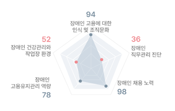

고용 역량 진단
진단 결과
- 홈
- 고용 역량 진단
- 고용역량진단
- 진단결과
(주)한화(정보통신)님의 고용역량 진단결과를 알려드립니다.
-
100806040200종합결과 58점 미흡
- 개선필요 영역 조직문화
-
동종업계 평균 52점나의 진단 위치


귀사의 장애인 고용역량 수준을 진단한 결과, 전 영역에 걸쳐 대체로 양호하나 개선해야 할 부분이 있다고 진단되었습니다. 귀사는 장애인 채용에 대해 수용적인 편입니다. 귀사에는 장애인이 수행할 수 있는 일부 직무가 마련되어 있으며, 장애인 근로자를 위한 편의시설과 장비 등 장애인 근로자의 건강과 안전을 위해 필요한 지원을 제공하고자 노력하고 있습니다. 향후에는 장애인 고용률을 높이기 위한 다양한 노력이 요구되며, 법적 의무사항 외에도 장애인 근로자를 지원할 수 있는 설비 및 제도를 마련할 필요가 있습니다.
영역별 분석 결과는 보고서에서 확인하실 수 있습니다.
우리 기업의 고용확대방안은?
개선 필요 영역
해결 방안
해결방안을 클릭하시면 자세한 내용을 보실 수 있습니다.